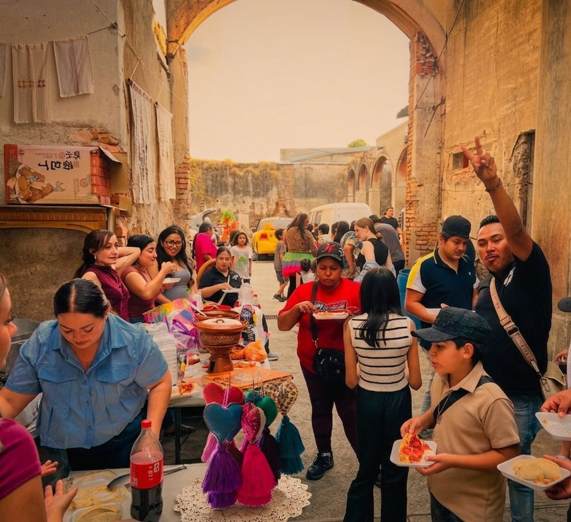
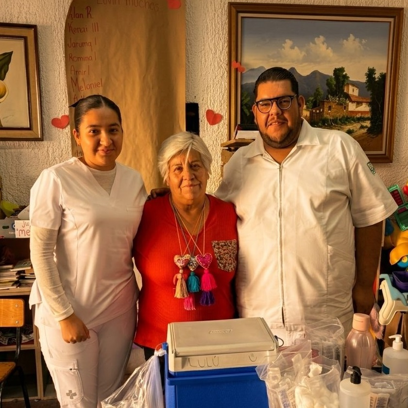
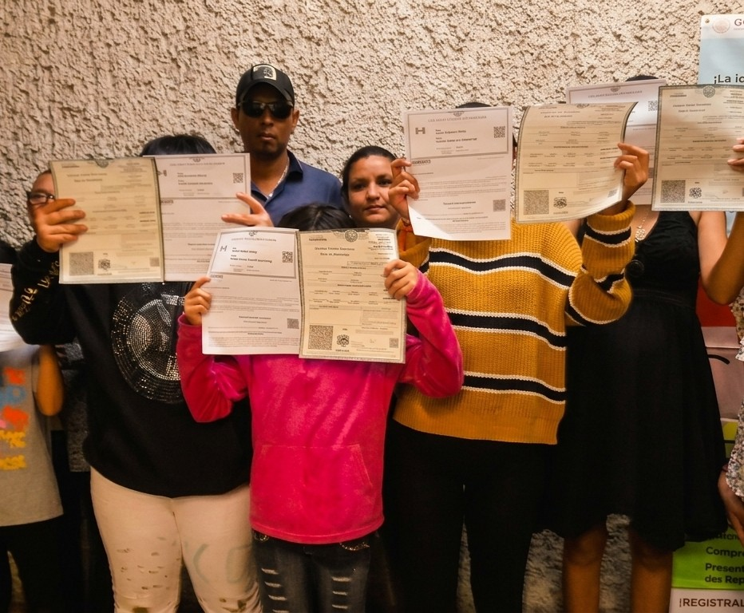
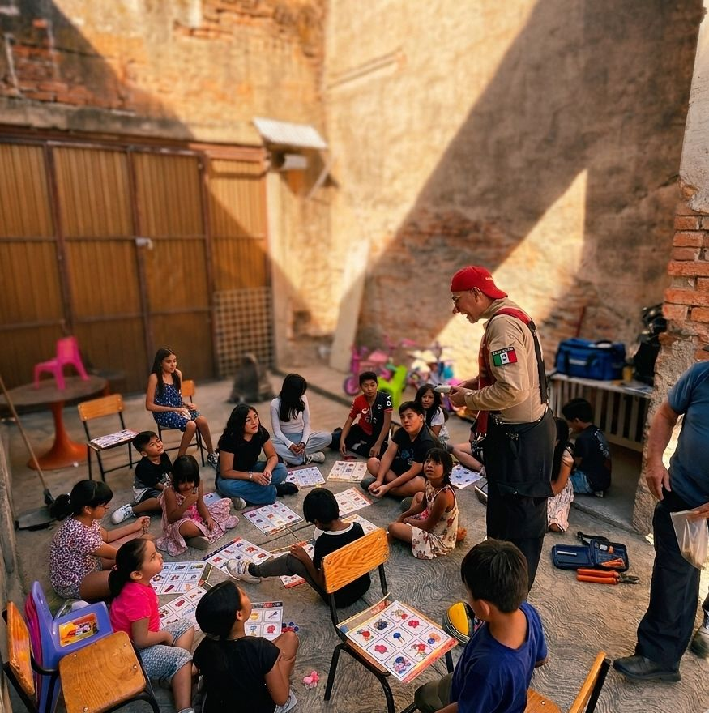
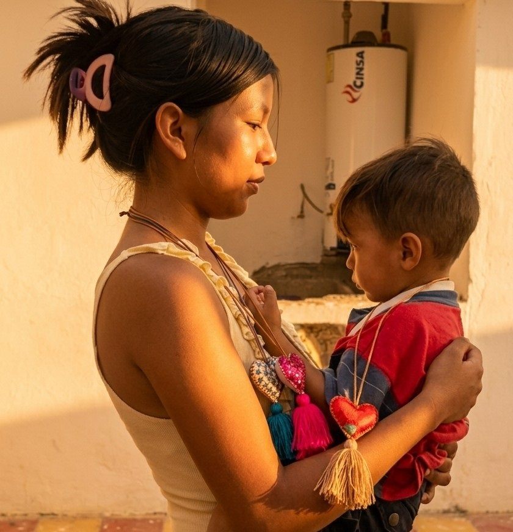
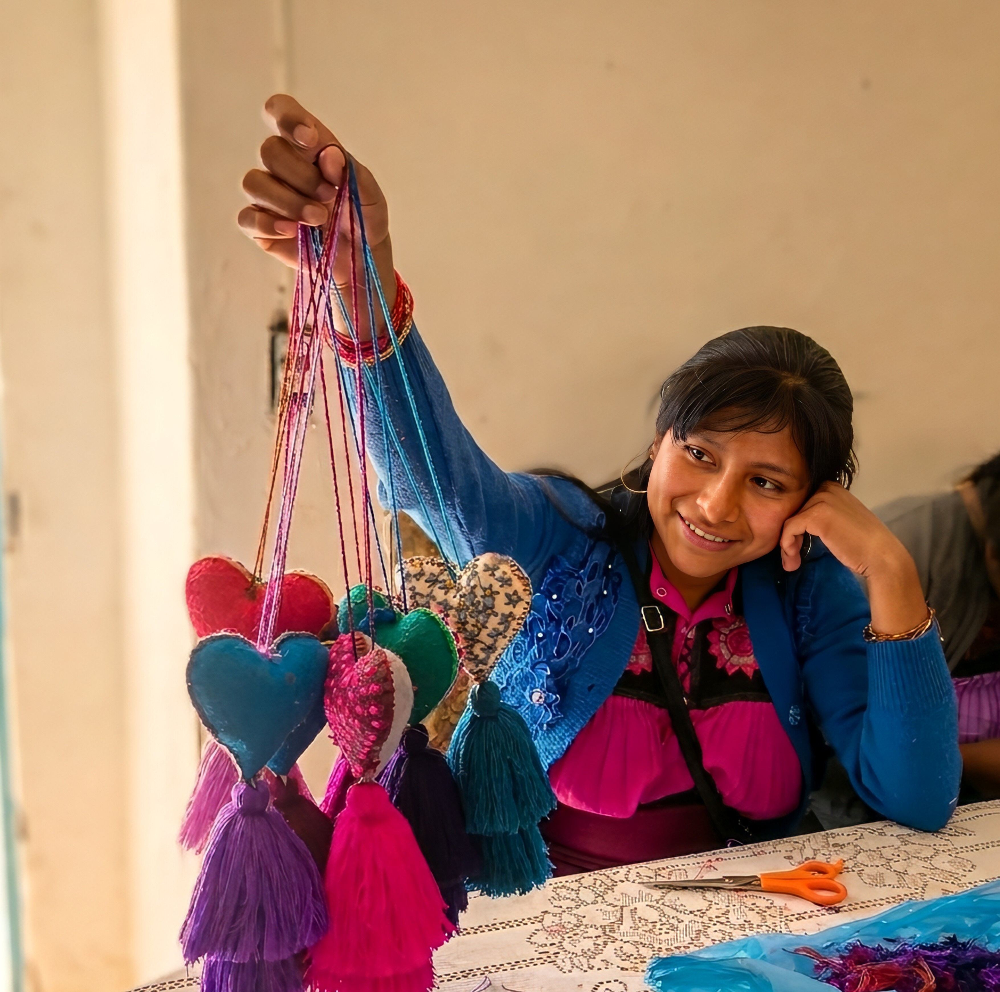

La alimentación tranforma. Empoderamos a mujeres de la comunidad para liderar la entrega de alimentos a quienes más lo necesitan.
Llevando platos gratuitos o accesibles a las calles y vecindades, no solo llenamos estómagos: salvamos familias y reconstruimos el tejido social desde la solidaridad.
VER MÁS
En Guadalajara, una comunidad de 11,000 personas carece de acceso a servicios de salud oficiales por falta de identidad, o le temen debido al riesgo de separación familiar.
Brindando consultas básicas a domicilio, traslados a hospitales, y medicamentos, buscamos que la falta de un documento no sea una sentencia de muerte o desamparo.
VER MÁS
En un sistema que utiliza el chantaje económico como obstáculo de registro, nosotros brindamos apoyo para que ningún niño o adulto viva en las sombras por falta de un documento que el Estado les ha vuelto inalcanzable.
VER MÁS
Confinados en un gueto de invisibilidad, la comunidad de San Juan de Dios se desarrolla en un entorno sin escuela ni documentos, marcados por el aislamiento.
Rompemos estas fronteras mediante la educación cultural y el modelaje: un proceso de aprendizaje sin presiones donde el arte y el servicio transforman la apatía en alegría.
VER MÁS
Miles de familias viven bajo la condena del 'pago diario': si no cubren su renta cada noche, pierden lo poco que tienen y son arrojadas a la violencia de la calle.
Nuestro refugio es su espacio de paz; un santuario protegido donde ni agresores ni autoridades pueden vulnerar la seguridad de las víctimas.
VER MÁS
Con el sistema de valores actual, madres e hijos nacen, crecen y mueren en un mundo sin derechos ni oportunidades. Desde hace 450 años, así sobreviven.
Buscamos guiar a las mujeres de la comunidad en el desarrollo de sus habilidades, brindándoles las herramientas necesarias para que logren obtener un empleo diferente que las dignificará.
VER MÁS